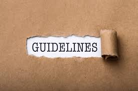

Acknowledgement
In this new edition of the guidlines for medical donations we would like to thank all our past contributers.For the
update we particularly acknowledge the input from the members of the Interagacy Pharmaceutical Coordination Group who did the first draft upate of the text, consultants for WHO, Lisa bero who assisted with the systematic review of the experience of drug donations over the past ten years since the previous edition and all others who provided comments.
Guidelines for medicine donations is based on four core principles that form the basis of good medicine donation practice, namely:
- Donations of medicines should benefit the recipient to the maximum extent possible.All donations should be based on an expressed need. Unsolicited medicine donations are to be discouraged.
- Donations should be given with due respect for the wishes and authority of the recipient, and in conformity with the government policies and administrative arrangements of the recipient country.
- There should be effective coordination and collaboration between the donor and the recipient, with all donations made according to a plan formulated by both parties.
- There should be no double standard in quality. If the quality of an item is unacceptable in the donor country, it is also unacceptable as a donation.
